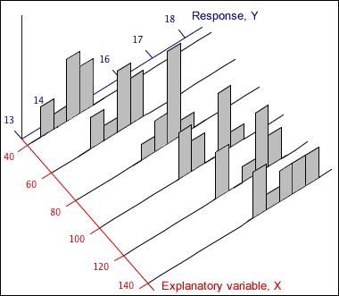

Response distribution at each X
In an experiment, several response measurements are often made at each distinct value of X. The diagram below shows one such data set using a histogram for the distribution of Y at each x-value.

Model for data
The response measurements at any x-value can be modelled as a random sample from a normal distribution. The collection of distributions of Y at different values of X is called a regression model.